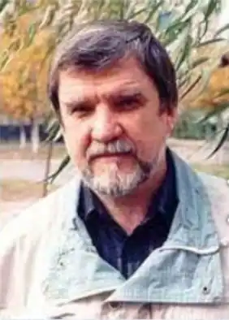

Олексій Миколайович Стариков (16 червня 1945, Анніно — 31 травня 2014, Кривий Ріг) — дитячий письменник, член Національної спілки письменників України та Спілки письменників СРСР. З 1951 до 2014 Олексій Стариков жив і працював у місті Кривий Ріг.1967 року закінчив електротехнічний факультет Криворізького гірничорудного інституту.
1975 року після закінчення аспірантури захистив дисертацію "Розробка та дослідження програмної системи автоматичного регулювання режимами роботи головної вентиляторної установки з регульованим приводом в умовах рудників Кривбасу" на здобуття наукового ступеня кандидата технічних наук у Київському політехнічному інституті. Викладав у криворізьких школах і в Криворізькому гірничорудному інституті/технічному університеті, Криворізькому металургійному факультеті Національної металургійної академії України, Криворізькій філії Київського національного економічного університету.
Поетичний талант Олексія Старикова проявився під час навчання в інституті. Літературний дебют відбувся в багатотиражці "Гірничий інженер". 1977 року криворізька міська газета "Червоний гірник" опублікувала його вірші для дітей.1978 року в журналі "Квант" було надруковано вірш "Незвичайна дівчинка" у формі загадки про двоїсту систему числення. Згодом вірш з'явився в "Енциклопедії для дітей" у розділі "Математика"1981—1989 — очолював Криворізьке міське літературне об'єднання "Рудана"1984 року був прийнятий до лав Національної спілки письменників України й Спілки письменників СРСР2000—2004 — очолював Криворізьке міське об'єднання при літературно-художньому альманахові "Саксагань". Лауреат літературної премії Криворіжжя. Лауреат Міжнародної літературної премії "Облака" в номінації "За кращу книгу року для дітей" (2008). Лауреат літературної премії імені Дмитра Кедріна в номінації "Література для дітей" (2009). Лауреат міжнародного конкурсу національної літературної премії "Золоте перо Руси" в номінації "Твори для дітей" (2010). Лауреат літературної премії Національної спілки письменників України імені Володимира Короленка за фантастичну повість "Город роботов" у номінації "Література для дітей та юнацтва"(2013). Автор 18 книг для дітей. Співавтор 20 колективних поетичних і прозових збірок, антологій, шкільних підручників і хрестоматій. Писав російською й українською мовами. Був постійним автором дитячих журналів "Костёр", "Искорка", "Пионер", "Мурзилка", "Колобок", "Веселые картинки", "Кукумбер", "Миша", "Наша школа" (Російська Федерація); "Барвінок", "Пионерия", "Пізнайко" (Київ); "Саксагань" (Кривий Ріг), "Радуга" (Київ), "Січеслав" (Дніпропетровськ) та інших. Співавтор аудіокниги "Письменники Дніпропетровщини — шкільним бібліотекам" (2012, Дніпропетровськ). 31 травня 2014 року помер. Похований у м. Кривий Ріг.